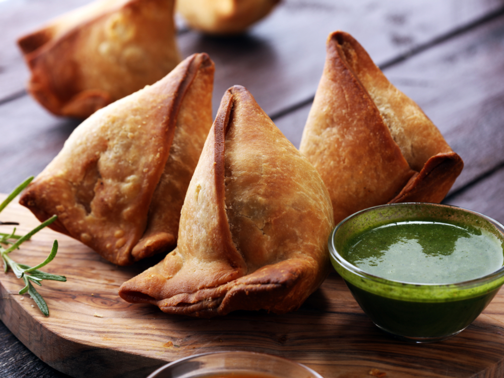
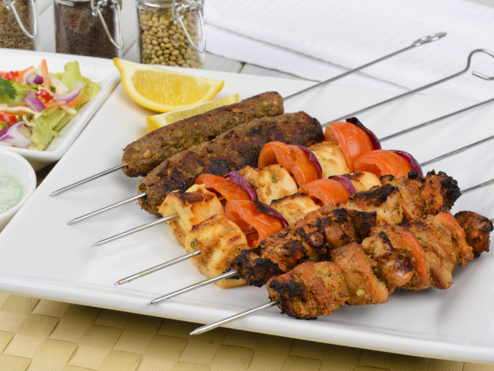
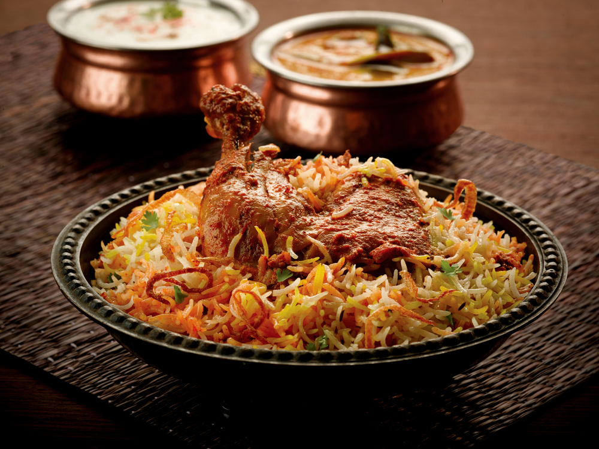
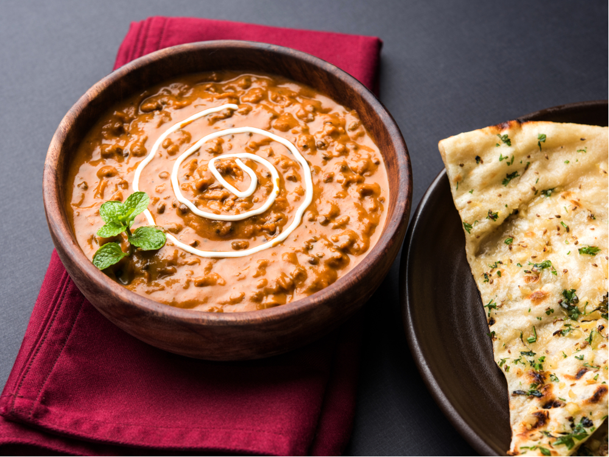
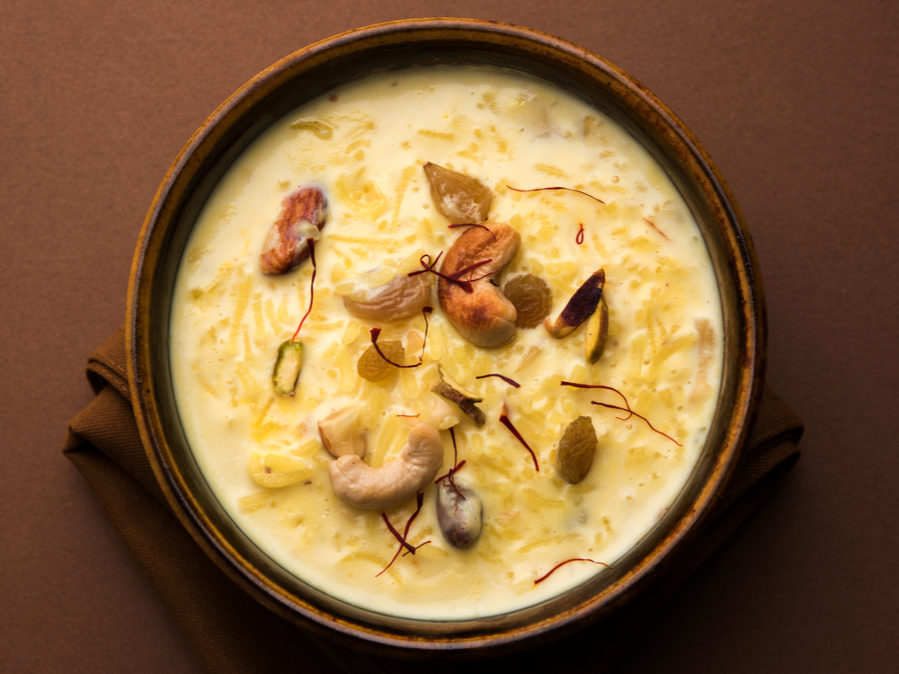

Cook
Best & Delicious food Restaurant
Indian Food
Appetizer
Aloo tikki

Alu Tiki dish belongs to the chat family, that is, fried appetizers, which are sold in kiosks and is considered one of the most popular appetizers in Indian cuisine, as no house or restaurant is empty of it. The word "alo potatoes" means that the word "tikki" means croquette (fried balls), and it makes alotiki balls from the mashed potatoes to which some spices are added, such as tamarind, ginger, coriander, mint, chickpeas, fried in hot oil and often eaten hot or warm.
Samosa
Sunbosa pies are among the most famous Indian dishes and they became one of the basics of the Indian table during the 13th century when the inhabitants became acquainted with them through merchants from Central Asia. They are pancakes of flour stuffed with a mixture of mashed potatoes, onions, peas and lentils, and several spices are added to them and fried in hot oil, and they are often eaten with chutney sauce.
Dahi puri

This dish is originally from Maharashtra and is from Mumbai, and is among the most popular starters in India. Dahi Puri consists of small fried mullet bread pancakes, which are stuffed with a mixture of mashed potatoes, chickpeas marinated with turmeric, hot pepper and salt, then add the tamarind dates and the spicy green chitney over it. The cattle.
Main dishes
Kebab
The kebab dish is one of the basics of Indian cuisine and its origin is due to the Indian Empire of the Mughals that brought it from Central Asia, and many changes have been made to it, especially the use of Indian spices and meat marinade in yogurt sauces. Kebabs can be made from beef, lamb, chicken and paneer cheese for vegetarians. Among the most popular types of kebab are tandoori chicken, skewer kebab, tondi kebab, tikka kebab and shami kebab.
Biryani
Biryani is one of the most famous Indian dishes, and it is a rice dish (Basmati) with Indian spices and spices, with a kind of meat, either chicken, lamb, fish, or vegetables, for vegetarians. The method of preparing biryani varies from region to region, the most famous being Hyderabad, Lucknow, Calcutta, Lahore, Kashmir, and Delhi.
Meen Moilee

The Maine Molly dish is one of the most famous fish foods in India and its origin is due to the Kerala region located on the southern coast of the Indian subcontinent. The local cuisine is characterized by the use of fish in abundance as well as coconut. Min Molly is one of the most popular dishes in the region and all of India. It uses the famous Pomfret fish and many spices, such as curry leaves, turmeric, coriander, and green hot pepper. Banana leaves, onions and coconut milk are added. Min Molly often accompanies a dish of basmati rice.
Dal
Dale stew is considered to be one of the best and most delicious Indian dishes, and dried peas, lentils, or beans are cooked in water, to which many Indian spices and spices are added in each region. It is often eaten with rice and the dish is called Dal Bhatt or with naan, roti or chapati.
Sweets and drinks
Gulab Jamun

Gulab dagamon sweets is one of the most famous and best desserts in India and its origin is due to the northern regions where it is said that the cook of the Mughal Emperor Shah Daghan has prepared it by mistake, and sweets are quarts made from khoya dough (evaporated milk) to which little flour is added and fried in The oil was poured into it syrup made of rose water, cardamom and saffron.
Kheer
One of the most famous types of rice with milk is considered one of the best Indian foods, as it contains rice, bulgur, tapioca or noodles, milk and sugar, and cooked all, then added to the mixture cashew nuts, cardamom, almonds, pistachios and saffron.
Chai Masala

It is called Karak tea or Masala Chai. It is a black tea prepared with some Indian spices and herbs. Milk, ginger, cardamom and sugar are added to the mixture. Spices and herbs differ from one region to another where cinnamon, anise, nutmeg and other spices are added.